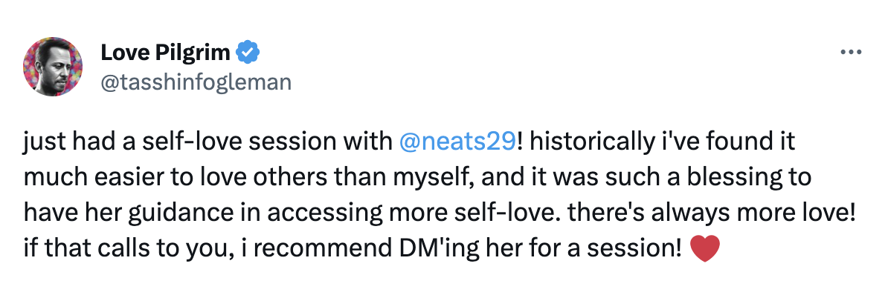

Somatic well-being practice
A space to feel, heal, and understand yourself more deeply.
At the core of what causes dissatisfaction in our lives is often a young part of us frozen in time, holding a painful belief about itself or the world.
You could think of our work together as a treasure hunt. We’ll use your pain points in life as breadcrumbs to find these young parts, and bring them back home. Over time, you will experience more ease, freedom and joy in your life.
Book a free discovery call here or read below for more information.
Why I do this work

I have been on my own inner journey for many years now and so much freedom and well-being has come as a result. This is why I love supporting others through their unique self exploration journey.
I have been been offering 1:1 IFS sessions professionally since the Spring of 2023. While I’m not a psychotherapist, I’ve completed the IFSCA IFS course which makes me an IFS-informed practitioner. I have also completed many courses with the Art of Accomplishment school since 2020.
Thus far, I have facilitated over 750 hours of sessions.
I view doing my own inner work as essential for holding space for others, so I take this very seriously; receiving weekly IFS therapy, meditation, group consults, peer coaching, meditative dance practice, year-long programmes with the Art of Accomplishment (Joe Hudson) etc.
How does it work?
We’ll start by exploring what you want to work on, or what’s present in the moment. Most of the time we will start the session laying down and doing some grounding to begin with, but I will tailor the session to your needs such as incorporating movement.
IFS (Internal Family Systems) therapy will be our main modality but I will weave in other modalities as and when needed. We will use sensations, feelings, thoughts and images to connect with your parts and emotions.
Benefits of this work
People who work with me regularly report:
- a deeper sense of trust with themselves
- more capacity and skillfulness around difficult emotions
- less inner conflict, more self-compassion and better ability to take care of themselves
- more ease in relationships
- better understanding of who they are while simultaneously holding it more lightly
How to book a session
There are broadly two ways of working together:
Ongoing Exploration: meeting regularly to dive deep. Regular clients report increased emotional fluidity, a greater capacity to be with difficult emotions and more compassion for themselves.
Here’s a client describing the specific benefits they gained by working with me over the space of a few months:
- Short term Experience: for those looking to experience this flavour of inner work, to tackle a recent challenge or to work on an ad-hoc basis.
You may book a free discovery call where we will discuss working together and book your first call. You may also DM me on twitter with any questions or to request a session.
Duration: sessions are 90 minutes on average, done via video call.
Investment: suggested: £100.
However, I offer a sliding scale: £75—£150
The sliding scale is to accommodate different affordability levels. You may choose a value in this range that feels right to you.
Testimonials
“anita is one of the best facilitators i have worked with. she made it easy to trust her process so i could focus on what was going on inside of me. i was grateful to have her help in guiding my attention, and especially her use of breathwork. months later i still think back to what she helped me discover in our sessions and use it for making decisions in life” — Mycelium Mage
“After following Anita’s journey into self-love and nervous system regulation for a while now, I finally had the opportunity to experience what she’s learned, and it was really, really nice. Going into it I was pretty jittery and didn’t know what to expect, but she held such a warm space and a kind presence and it helped me understand what she’s moving towards. I left the session feeling much more in tune with my body, and what it meant to love myself, and to use the breath and my feelings to take me deeper into that experience. I’ve been continuing to use what I learned in that session since, practicing box breathing and making space for my feelings and showing them affection.” — Anansi
“Anita has a really special energy. She is so warm, loving, attentive, intelligent, and clearly passionate about this work. I felt very held and cared for in our session, in which she blended IFS therapy, breathwork, and light touch into her own unique format. I think she’s a perfect fit for healing work.” - Jane Miller
“There’s a story that some of us who have met Anita tell others: when you are speaking with her it feels like she will listen and accept anything and everything you have to say. It’s something you can’t force or fake. Her countenance, persence, and empathy gives you permission and space to feel into where you are right now. Her self-love coaching sessions is the epitome of this because she is there with you to inquire where you are and allow whatever needs to pass through, pass through you. I no longer have to be scared or lost in discovering things about myself anymore, knowing Anita will be there when I need her to be.” — Minnow Park

![review of my somatic self-love coaching with
@neats29 :It was psychoactive. Anita quickly set the stage and got me out of my head (impressive!). We then identified 3 parts of myself in different areas of my body: a toddler, an 8 year-old and an awkward teen. I talked to them and listened to them and told them how old I was and that I could take care of us now. It was beautiful. I cried, I writhed and at one point I’m pretty sure I accessed the jhanas (bonus!). Anita’s approach was gentle and insightful and I recommend her 100%.](./index/nat.png)


How to prepare for a session
- Find a quiet space where you can lie down comfortably (bed/sofa/floor etc), or you may do this seated if you prefer
- Position your device so I can see your face and chest
- Wear a pair of headphones, as the sound can get muffled when laying down
- Leave some buffer time after our session to allow a gentle transition into the rest of your day
- Let me know if you have a hard stop
Disclaimer
By booking a session, you acknowledge that I am not a licensed mental health professional, psychotherapist, or medical provider. This session is for personal growth and emotional support only. It is not psychotherapy, counselling, or mental health treatment. By proceeding, you agree to take full responsibility for your own well-being.
Self-love guided meditation
If you have any questions, please send me message on twitter.